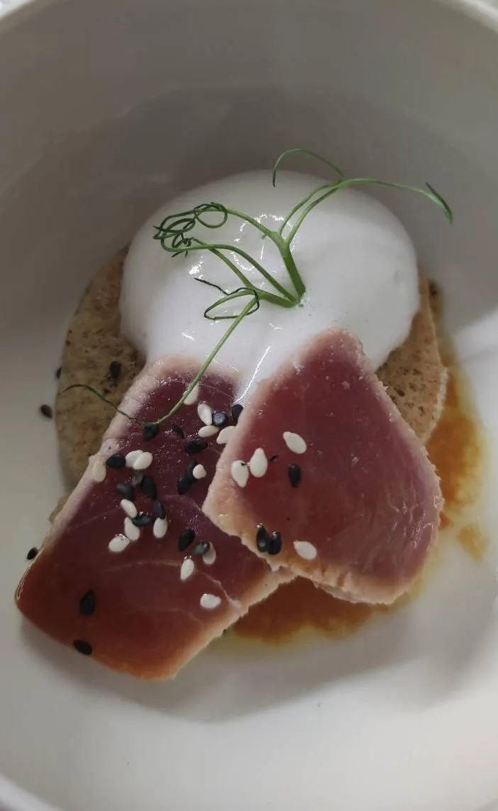

Passez un moment de convivialité dans notre
restaurant Hercule Poireau situé à Périgueux
Laissez-vous tenter par notre cuisine gourmande aux saveurs périgourdines.
Découvrez les services de notre restaurant au cœur du
centre-ville de Périgueux
centre-ville de Périgueux
Nous vous recevons avec plaisir aux déjeuners et aux dîners. (Sauf le Mardi et le Mercredi)
vous proposons une cuisine aux saveurs du terroir avec des produits frais de qualité.Le restaurant Hercule Poireau dispose d'une salle de 40 couverts mise à votre disposition pour l'organisation de vos événements privés ou professionnels.
Il est par ailleurs possible de privatiser la salle à partir de 30 couverts.
Découvrez davantage d'informations sur notre restaurant.
vous proposons une cuisine aux saveurs du terroir avec des produits frais de qualité.Le restaurant Hercule Poireau dispose d'une salle de 40 couverts mise à votre disposition pour l'organisation de vos événements privés ou professionnels.
Il est par ailleurs possible de privatiser la salle à partir de 30 couverts.
Découvrez davantage d'informations sur notre restaurant.
